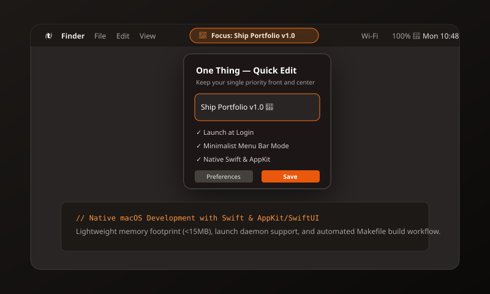

One Thing — macOS Menu Bar App

Main Technology Stack
Swift
macOS Native
AppKit
SwiftUI
NSStatusBar
Makefile
Project Overview
One Thing is a lightweight native macOS desktop utility designed to keep a single priority, goal, or reminder visible directly in the macOS menu bar. Built natively in Swift with AppKit and SwiftUI components, the utility operates with negligible memory usage (< 15MB) and avoids heavy third-party runtime frameworks.
Key Features
- Minimalist Menu Bar Presence: Displays your top priority text directly alongside macOS status icons.
- Popover Editor: Click-to-edit interface allowing quick updates, emoji support, and shortcuts.
- Launch at Login: Optional automatic start on boot via macOS Service Management / launchctl.
- Dark & Light Native Appearance: Adapts automatically to macOS system appearance and wallpaper tinting.
- Terminal & Script Build System: Features a clean, modular Makefile build workflow without requiring full Xcode project bloat.
Engineering Challenges & Solutions
- Memory & Battery Efficiency: Utilized native AppKit `NSStatusItem` bindings with zero idle CPU polling to preserve MacBook battery life.
- Text Truncation in Menu Bar: Implemented dynamic text truncation and custom width calculations so long priorities don't crowd out essential macOS system icons.
 View GitHub Code
View GitHub Code